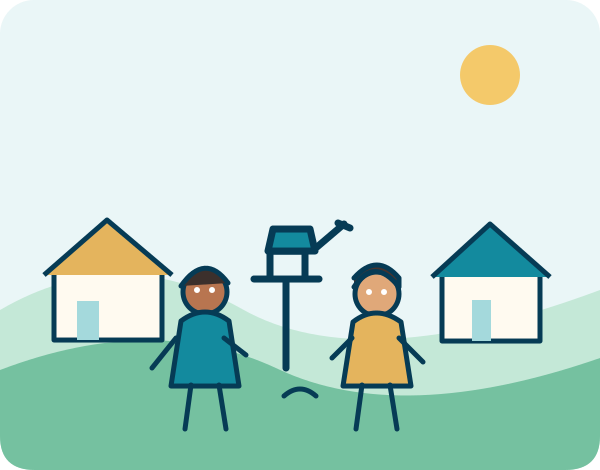

Levar água e dignidade
Levar água potável, dignidade e esperança para comunidades vulneráveis por meio de soluções hídricas sustentáveis e inovadoras.
Quem somos
Trabalhamos, como proposta de organização social, por soluções acessíveis e sustentáveis que aproximem comunidades da água segura e do conhecimento.
A Água Pura é uma ONG fictícia criada para fins acadêmicos.

Nosso propósito
A Água Pura nasce da ideia de que nenhuma comunidade deveria ter sua saúde e suas oportunidades limitadas pela falta de água potável ou saneamento adequado.
A proposta é unir tecnologia acessível, educação ambiental e participação comunitária. Cada iniciativa deve considerar a realidade local e preparar os moradores para cuidar e manter as soluções implantadas.
O projeto também valoriza o monitoramento da qualidade da água e a transparência na comunicação dos resultados e dos recursos utilizados.
Nossa direção
Princípios que orientam as escolhas e as ações propostas para a organização.
Levar água potável, dignidade e esperança para comunidades vulneráveis por meio de soluções hídricas sustentáveis e inovadoras.
Ser referência na redução da escassez de água potável em comunidades vulneráveis, contribuindo para um futuro em que a água limpa seja uma realidade para todos.
Transparência na gestão, empatia com as comunidades, sustentabilidade nas soluções e colaboração com moradores, voluntários e parceiros.
Como atuamos
Propor soluções de baixo custo, como captação e filtragem de água da chuva, poços comunitários com energia solar quando viáveis e filtros cerâmicos ou de bioareia com manutenção simples.
Promover oficinas sobre higiene, saúde preventiva, conservação da água e formas responsáveis de reutilização de águas cinzas, respeitando as orientações sanitárias aplicáveis.
Capacitar moradores para acompanhar, operar e manter os sistemas, fortalecendo a autonomia local e a continuidade dos projetos.
Prever análises periódicas da qualidade da água e acompanhamento dos resultados para orientar melhorias e manter a prestação de contas transparente.
Um compromisso coletivo